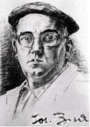

|
Geschätzte Bürger und Bürgerinnen
Die Gemeinde Ingenbohl Brunnen ist stolz darauf, dass ihr bedeutender
Sohn Josef Bisa nun auch im Ausland die verdiente Anerkennung erhält.
Brunnen am schönen Vierwaldstättersee war schon immer ein wichtiger
Durchgangsort auf dem Weg nach "Bella Italia", anfänglich
mit Strapazen auf Saumpfaden über die Schweizer Alpen; heute auf
der bequemen Schnellstrasse durch den Gotthard. Der alljährliche
Kontakt zum sonnigen Süden erwärmt und erholt deutschschweizer
Seelen während ihrem Urlaub.
Es ist für unsere Gemeinde jedoch eine spezielle Freude, dass die
Verbindung mit dem Süden nicht nur aus Handel, Transport und Ferien
besteht, sondern dass auch heimische Kunst und Kultur einen Platz in Zivido
findet. Dies verdanken wir von Herzen dem unermüdlichen Einsatz der
Associazione Culturale Zivido mit ihrem Präsidenten Pierino Esposti.
Mit freudigem Handschlag über die Grenzen
Hansruedi Strüby
Sindaco
(traduzione)
Brunnen, 1 Agosto 2002
Egregi cittadini e cittadine,
il Comune di Ingenbohl-Brunnen (Svizzera) è molto fiero del fatto
che il suo importante artista, Giuseppe (Josef) Bisa, riceva un meritato
apprezzamento anche all'estero.
Brunnen, situata nel centro della Svizzera in riva al lago dei Quattro
Cantoni, è da sempre un luogo importante di transito per andare
da nord a sud e mentre nei secoli passati si viaggiava su un sentiero
molto difficoltoso, oggi invece grazie alla galleria del San Gottardo
risulta più comodo ed agevole. Il caldo ed il sole attira sempre
tanta gente al sud per trascorrere le vacanze e per godere l'ambiente
meridionale.
È quindi una gioia speciale, per il nostro Comune, che la relazione
con il sud non sia solo commercio, trasporti e vacanze, ma anche arte
e cultura e che lo scultore Bisa riceva un riconoscimento a Zivido.
Ringraziamo cordialmente l'Associazione Culturale Zivido, ed il suo presidente
Pierino Esposti, per l'impegno instancabile.
Una stretta di mano, con molto piacere, sopra la confine.
Hansruedi Strüby
Sindaco Ingenbohl
L'Associazione Bisa di Brunnen è lieta di riconoscere che lo scultore
Josef Bisa, grazie all'interesse dell'Associazione Culturale Zivido e
all'instancabile impegno del suo presidente Sig. Pierino Esposti, si manifesti
sul luogo storico di Marignano non solo - come lo faceva fin dal 1965
- nella sua opera principale, ma da ora in poi anche in tutta la sua personalità
impressionante.
Georg Schoeck
Prologo
"Guarda, figliolo, come l'uomo cancella la sua memoria!" disse
il padre al ragazzetto che, steso fra l'erba del ciglio, osservava curioso.
"Là in fondo, fra gli alberi, spunta una chiesetta, è
la tomba di uomini antichi che morirono con coraggio e valore per obbedire
al desiderio di re e condottieri, bramosi di possedere un Ducato italiano,
quello più ricco e famoso, quello di Milano".
"Ma babbo, chi erano costoro?" gli occhi spalancati sulla favola
novella.
"Erano forti che di là dalle Alpi giunsero un giorno in questa
nostra terra bella per conquistarla, ma furono da questa conquistati.
Toccarono con mano i nostri prati, le nostre vigne, i nostri tesori che
uomini illustri nel tempo avevano creato. Si specchiarono nelle acque
limpide dei fossati e morirono, tantissimi, tra i fiori autunnali chi
guardando nell'ultimo istante il sole calante chi la notte stellata".
"Ora dormono!" esclamò il fanciulletto rapito.
"Si, proprio dove il verde è più intenso e gli alberi
più belli. Dormono e un gigante di pietra li protegge come insieme
protegge l'amico morente".
"Oh, un gigante fra noi!!!" e un fremito lo pervase e disse
impaziente: "…continua, papà".
Lo sguardo lontano nel tempo, la voce tremante, e l'uomo proseguì.
"Non uno, ma tanti giganti; le piume al vento, gli urli sonanti,
le trombe, i cavalli, fra tamburi rullanti e spari assordanti. Tutto tace
ormai da secoli, il silenzio della pietà".
No, non sembra convinto il fanciulletto mentre strappa uno stelo d'erba
osservandolo attento: "Cos'è allora questo rumore che si sente
vicino,… papà?".
"E' il progresso che avanza" disse lui, sconsolato "vedi
quei mostri attorno? fra poco saranno anche qui, in questo campo glorioso
e lo seppelliranno per sempre!".
Più nessuno dei due parlò; la favola triste finiva e negli
occhi rimaneva solo un ricordo dal verde intenso.
Era il 14 agosto dell'anno duemila, l'ultimo del millennio, l'ultimo del
campo della Battaglia dei Giganti. Una ruspa avanzò minacciosa
soffocando un lamento portato dal vento: erano gli uomini antichi il cui
sonno veniva profanato.
Adagiata sulla verde campagna lombarda solcata da una fitta rete di
fossi irrigui; accanto al fiume Lambro carico di storia, la bimillenaria
Zivido, frazione della città di San Giuliano Milanese, evoca da
secoli un famoso fatto d'armi che la vide contemporaneamente protagonista
e vittima: la "Battaglia dei Giganti" detta anche "di Marignano".
Francesco I re di Francia, appena ventenne, in questo luogo ed intorno
alla chiesetta visse il suo momento più glorioso sconfiggendo le
invincibili ed agguerrite truppe mercenarie svizzere da tempo immemorabile
temute oltreché ammirate.
Erano le giornate del 13 e 14 settembre 1515 quando, dopo uno scontro
a lungo incerto per il valore militare degli eserciti in campo, potè
coronare il sogno di far proprio il più ricco Ducato italiano:
quello di Milano.
Incerto ancora oggi è il numero dei caduti, vicino o superiore
a 12.000 uomini d'arme fra cui buona parte della nobiltà francese.
La campagna sconvolta; gli abitati di San Giuliano e di Zivido abbandonati
dalla popolazione mentre dalle case distrutte un pigro fumo nero si alzava
ammorbando l'aria settembrina.
Lontano, sulla strada romana "Aemilia" gli svizzeri sconfitti
lentamente ritornavano a Milano, città dalla quale poco dopo dipartirono
per rientrare fra le familiari montagne e vallate dei cantoni elvetici.
Avanzavano fieri e composti, trainavano i cannoni francesi conquistati,
elevavano al cielo le insegne e le alabarde.
Nel silenzio che gravava irreale, i francesi vittoriosi osservavano quella
schiera composta; la osservavano per l'ultima volta sul suolo italiano,
perché in quel momento la secolare neutralità elvetica emetteva
il primo vagito.
"Ex Clade Salus"
Il tempo era trascorso, a volte sereno, ma spesso tumultuoso e di quella
battaglia, soprattutto del luogo dove si svolse, la memoria venne a svanire
quasi del tutto fino a rimanere solo una traccia vaga nei polverosi documenti
d'archivio della chiesa madre di San Giuliano Milanese.
Il destino volle però che a Zivido giungesse un uomo particolare,
don Raffaele Inganni, con l'incarico di cappellano della chiesetta ricevuto
dalla nobile casata dei Brivio, quest'ultima titolare dell'edificio sacro
che fece erigere nel lontano Quattrocento e della vasta area circostante
che ancora oggi testimonia la lungimiranza marchesale.
Ottemperato ai pochi obblighi sacerdotali, per l'Inganni il tempo era
abbondante e non disdegnava incontrasi con lo squisito parroco sangiulianese
per discorrere. Fu proprio in una di queste occasioni che avvenne il miracolo.
"Correvano i primi giorni del giugno 1879… allorchè mi
ebbi la graditissima visita del venerando ed ora compianto preposto parroco
di San Giuliano, don Giuseppe Brigola… Intrattenendomi seco lui in
famigliare colloquio, colsi l'opportunità per meglio informarmi
intorno agli obblighi inerenti alla mia nuova posizione.
In quell'occasione egli mi parlò di due messe da celebrarsi ogni
anno alla metà di settembre, come da antica consuetudine. Naturalmente
richiesi al simpatico vegliardo quale ne fosse la relativa applicazione,
ma egli altro non seppe rispondermi fuor che, se la memoria nol tradiva,
dovevano essere applicate a suffragio delle anime dei soldati caduti in
una battaglia combattuta secoli addietro nei dintorni.
Da qui la curiosità in me di conoscere quel fatto d'armi e per
diretta conseguenza la risoluzione di farne le corrispettive ricerche".
Il lavoro di ricerca negli archivi italiani e francesi, a cui si aggiunsero
numerosi scavi in un prato detto "della Vittoria", adiacente
la strada che da San Giuliano recava a Zivido, e intorno oltre che dentro
la cappella dei Brivio, non fu facile e breve, ma portò a risultati
sorprendenti. Le importanti notizie vennero raccolte dall'Inganni in un
libro voluto e finanziato dal marchese Giacomo Brivio dal titolo: "Origini
e vicende della Cappella espiatoria francese a Zivido presso Melegnano".
Il tragico evento, passato alla storia con il nome di "Battaglia
dei Giganti" o "di Marignano", emerse lentamente dalla
polvere dei secoli fino a comporre un quadro impressionante: due grandi
potenze militari l'una contro l'altra armate, spinte dalla bramosia di
conquista; un Ducato milanese ricco e prospero, ma debole; atti di eroismo,
ma anche furore omicida che non lasciava scampo ai prigionieri ed ai feriti;
un territorio, quello sangiulianese e zividese, devastato e con la popolazione
in fuga disperata; una campagna, quella tanto decantata ed invidiata campagna,
ridotta per lungo tempo ad un orrido cimitero a cielo aperto.
"Non tutto il male viene per nuocere", talvolta si sente dire
quando a seguito di un triste fatto è possibile ricavare anche
la conseguenza positiva.
In seguito alla cocente sconfitta gli svizzeri, fino ad quel momento temuti
ed invincibili, trassero la decisione di non combattere più guerre,
proposito da cinque secoli onorato. Zivido divenne quindi la culla della
famosa neutralità elvetica, testimoniata anche sul nostro territorio
dal monumento che vollero erigere a ricordo dei loro caduti: "Ex
clade salus" recita la frase scolpita nel granito.
I francesi, con la conquista del Ducato di Milano, ebbero modo di approfondire
la conoscenza del Rinascimento italiano (che tanto interesse aveva suscitato
in Francia) e dei suoi più grandi esponenti fra cui Leonardo da
Vinci il quale seguì Francesco I° in Francia, dimorando nel
castello reale di Amboise dove morì ed è sepolto dopo aver
donato al re l'opera più famosa ed ammirata: "la Gioconda".
Don Raffaele Inganni
Come più sopra è stato detto, il merito di aver riscoperto
le memorie ed il luogo dove si svolse la "Battaglia dei Giganti"
o "di Marignano" va ascritto ad un oscuro cappellano di Zivido
la cui opera venne ampiamente riconosciuta e gli valse il titolo di Accademico
di Francia. Chi era Don Raffaele Angelo Inganni?
Primo di quattro fratelli, nacque a Milano il 27 aprile 1841 da Francesco
Inganni e Luigia Regli. Fu battezzato il giorno 28 nella Basilica di Santa
Maria della Passione e suo padrino fu Angelo Inganni, fratello del padre,
famoso pittore al quale il comune di Milano dedicò una via della
città.
Raggiunta la giusta età, il giovane Raffaele fu indirizzato alla
vita ecclesiastica. Il 14 marzo 1862 fu "ad primam clerical tonsuram";
il 19 dicembre "ad primos duos ordines minores" e "ad postremos
duos ordines minores".
Con supplica del 9 dicembre 1864 Raffaele Inganni chiese al Vescovo Vicario
Capitolare Carlo dei conti Caccia Dominioni, Vescovo di Famagosta ed in
sede vacante Vicario Generale Capitolare, di essere ammesso agli esami
del Suddiaconato. Questa ammissione gli fu concessa unitamente ad un legato,
ossia una rendita, di Antonio Corbella in ecclesia Nosocomio Ospedale
Maggiore di Milano, per la celebrazione di 309 messe feriali. Il legato
era d'obbligo al fine di avere una rendita per il proprio sostentamento.
Essendo Suddiacono non poteva ancora cantare messa, pertanto pagò
sicuramente un altro sacerdote in vece sua. Il 28 febbraio 1865 fu ammesso
agli esami di Diaconato ed il 30 maggio agli esami di Presbiterato, infine
ordinato sacerdote il 10 giugno 1865.
Il primo incarico lo vede catechista e vice rettore dell'Istituto Spagliardi
di Parabiago. Dal 1869 fu coadiutore a Casbeno di Varese, ove gli morì
il padre Francesco il 22 febbraio 1872. Arrivò successivamente
a Melegnano nel 1875 con incarico di sagrista confessore. Qui fece trasferire
la madre domiciliandola nei pressi della prepositurale di San Giovanni,
in via del Ponte (l'attuale via Dezza). Dal registro di morte del comune
di Melegnano, con dichiarazione di due testimoni, risulta che la madre
Luigia Regli morì il 31 gennaio 1878.
Fu nominato cappellano di Zivido ai primi di giugno del 1879 rimanendovi
sino all'aprile 1893, allorchè venne assegnato alla parrocchia
di Triginto; quindi dal settembre del 1895 divenne cappellano a San Celso
(oggi santa Maria dei Miracoli presso San Celso, Milano, in corso Italia).
Passò successivamente alla Domus Emeritorum dei SS.Ambrogio e Carlo
(si trovava sul fianco destro guardando la Basilica), dove morì
quiescente il 16 settembre 1914.
Ulteriori ricerche (effettuate da Giancarlo Cattaneo, socio dell'Associazione
Culturale Zivido) all'ufficio anagrafe del comune di Milano per sapere
se i familiari di don Raffaele, fratelli e sorella, avevano lasciato tracce
nelle vicende anagrafiche comunali, diedero esito negativo.
L'ufficio di stato civile rilasciò un certificato di morte dal
quale si apprese che la salma di don Raffaele Inganni fu sepolta a Musocco
- Cimitero Maggiore, e le sue ossa, non reclamate da parenti, furono successivamente
collocate nell'ossario comune.
Le ultime indagini si riferiscono ai padri Oblati di San Celso, presso
i quali sicuramente fu celebrato il funerale di don Raffaele e, non essendoci
teoricamente parenti, è ipotizzabile che i documenti che permisero
al cappellano di casa Brivio la pubblicazione dell'importante libro "Origini
e vicende della Cappella espiatoria francese a Zivido", se conservati
dallo stesso, possano trovarsi fra i documenti d'archivio della Domus
Emeritorum, passato poi agli Oblati, consultabile forse, nella sede dei
padri in via Settala, chiesa di S.Gregorio.
Don Raffaele Inganni fu un uomo di ingegno assai pronto e vivace, felice
nelle iniziative ed abile nel portarle a compimento. Le opere di Zivido,
legate al suo nome, stanno a dimostrare un elevato livello culturale che
non tradiva l'innato senso storico ed artistico proprio della famiglia
da cui proveniva.
Zivido il "borgo dei Giganti"
Pare che i primi ad occupare quel leggero rialzo del terreno in riva
al fiume Lambro, circondato da acquitrini e foreste, furono, più
di duemila anni fa, i Gepidi da cui deriverebbe l'attuale nome di Zivido,
frazione della città di San Giuliano Milanese.
L'ottima posizione geografica venne successivamente valorizzata dai Romani
i quali trasformarono quell'insignificante agglomerato di capanne in un
attivo centro commerciale dove le merci provenienti da ogni dove, dopo
aver navigato sul Lambro, venivano dirottate ad un villaggio poco distante
che dimostrava di diventare un giorno molto importante: Mediolanum, ovvero
Milano. A testimonianza di ciò sono il rinvenimento casuale, nella
terra che ostruiva alcune cantine del castello Brivio Sforza a Zivido,
di puntali d'anfora, monete e cocci che l'Associazione Culturale Zivido
ha raccolto e consegnato alla Soprintendenza Archeologica di Milano.
Il "centro logistico" di questo intenso movimento di merci era
rappresentato da un agglomerato di edifici che comprendeva certamente
un'abitazione e magazzini, edificato a poca distanza dall'antica riva
del fiume Lambro. Con il passare dei secoli questi edifici vennero lentamente
trasformandosi in un castelletto militare e, acquistato dai marchesi Brivio,
casata di origine germanica, prese quell'aspetto definitivo di palazzotto
nobiliare di campagna che noi ancora oggi vediamo.
Nonostante la trasformazione edilizia, questi edifici non persero la caratteristica
originaria, cioè quella di essere il centro di una attività
economica redditizia. I marchesi Brivio, infatti, da qui diressero le
imponenti trasformazioni del territorio circostante di loro proprietà.
Fecero scavare una rete capillare di fossati con il duplice scopo di prosciugare
la campagna acquitrinosa ed avere acqua in abbondanza per l'irrigazione
dei prati che ben presto presero a produrre ogni bene che veniva trasportato
nella cascina adiacente al castello. Il borgo di Zivido prese ad ingrandirsi
lungo l'antica riva del Lambro, che nel frattempo si era allontanato,
divenendo questa la via principale a chiusura della quale i Brivio edificarono
nella seconda metà del Quattrocento la cappella gentilizia che
più tardi fu al centro dell'immane scontro "dei Giganti".
Campi mirabilmente lavorati, messi abbondanti, una vasta area a vigneto,
un borgo attivo ed elegante nella sua semplicità, è questo
lo spettatolo che ammirarono estasiati i soldati francesi guidati dal
giovane re di Francia Francesco I° quel fatidico settembre del 1515.
Pasquier le Moyne lo scrive nella sua cronaca della discesa in Italia
del re straniero e appunta, con una certa irritazione, il fatto che l'avanguardia
dell'esercito aveva depredato le cantine bevendo tutto il vino contenutovi:
chi ultimo arriva… mal s'accomoda!
Dopo le due giornate, il 13 e 14 settembre 1515, durante le quali francesi
e svizzeri si affrontarono con coraggio e ferocia per conquistare il Ducato
di Milano, di tutto ciò rimase solo la desolazione: campi distrutti,
cumuli di cadaveri, i borghi di San Giuliano e di Zivido quasi rasi al
suolo, il castello dei Brivio in fiamme dove perirono diverse centinaia
di svizzeri che vi avevano trovato rifugio.
A ricordo della vittoria, ma soprattutto spinto dalla pietà umana
verso le migliaia di uomini valorosi che qui caddero per altrui sogni
di gloria e di conquista, Francesco I° decise di far edificare una
chiesa ed un monastero dove potessero riposare, fratelli, per i secoli
avvenire. Così si legge nel decreto reale datato 15 gennaio 1518
in cui il re francese dispone la costruzione del cenobio e dell'annessa
chiesa della Vittoria "apud loci Zibidi" (presso la località
di Zivido) per "Sanctum Julianum proelio" ("battaglia di
San Giuliano), riportando inoltre alla verità storica un evento
che nel tempo fu identificato e tramandato, acriticamente da molti, con
il termine di "battaglia di Marignano". Parola di re!
Il monumento
Il tempo trascorre inesorabile e la memoria si fa labile, ma qualcosa
sta succedendo lontano da Zivido, in mezzo alle Alpi, nel cantone di Svitto,
anzi più precisamente nella città di Brunnen. E' l'anno
1964, ma ascoltiamolo dalla viva voce di Georg Schoeck:
"Il rapporto della nostra famiglia con Josef Bisa risale alla metà
degli anni trenta, quando lo scultore, tornando da Parigi, si stabilì
con uno studio proprio a Brunnen. Il mio primo contatto con lui avvenne
lì quando gli facevo, ragazzo decenne, da modello. L'opera, un
busto di bronzo di una straordinaria vivezza ed espressione, si trova
oggi nella mia proprietà.
La parola "studio" suscita idee forse non proprio corrispondenti
a quello che era in realtà. Si trattava, infatti, di un semplice
garage che durante i decenni si riempiva di gessi e di schizzi, visto
che la condizione finanziaria di Bisa non tenne mai dietro al riconoscimento
che continuamente aumentava.
Passando per la Gersauerstrasse i suoi amici si fermavano volentieri un
attimo nel suo studio per scambiare due parole sul mondo, la vita, l'arte
e per vederlo lavorare. Così anche il suo amico e promotore, Dr.
Hermann Stieger, che già allora gli aveva procurato un incarico
per il "Bundesbriefarchiv", l'Archivio Storico a Svitto, in
quegli anni appena inaugurato. Il cosiddetto "Bälzel",
la scultura di un ragazzo, che si trova oggi all'ingresso dell'archivio
accanto al busto di Heinrich Danioth, opera quest'ultima che Josef Bisa
aveva fatto originariamente per incarico del Cantone di Uri e che adesso
onora il creatore dell'affresco sulla facciata dell'archivio.
Era lo stesso Dr. Stieger, tra l'altro amico del consigliere federale
Philippe Etter, che gli procurò l'onorevole incarico del monumento
di Marignano. L'inaugurazione del monumento, però, ebbe luogo purtroppo
solo dopo la morte del fedele amico e instancabile sostenitore."
I ricordi di Georg Schoeck sull'amico Josef Bisa "scultore dei Giganti"
irrompono dalla memoria e si fanno nitidi.
"Ma torniamo agli anni trenta dove si svolge il seguente divertente
aneddoto che riesce, forse in modo migliore, a mostrare l'amicizia dei
due ed il tono che usavano tra di loro. Bisa si guadagnava la vita - miseramente
comunque - soprattutto con sculture sepolcrali (la Svizzera primitiva
rispecchiava allora effettivamente in tutto il famoso detto dello scrittore
Gottfried Keller della "legnaia per l'arte"!). Un giorno il
Dr. Stieger, passando dallo studio ed intenzionato a fermarsi per un attimo
a salutare l'amico, trovò un fogliettino attaccato alla porta con
scritto: "Sono al cimitero", al che lui rispose laconicamente
aggiungendovi sotto in matita: "Riposa"...
Per quanto riguarda i miei ricordi personali devo dire che, 16 anni più
giovane dello scultore, entrai nel "circolo eletto" come interlocutore
da prendere sul serio solo da studente. Al "circolo eletto"
facevano parte noti artisti, Heinrich Danioth, lo scrittore Meinrad Inglin,
l'autore del "Guglielmo Tell" in dialetto svizzero tedesco Paul
Schoeck ed il compositore Othmar Schoeck.
Seguii volentieri la tradizione delle visite sporadiche allo studio, dove
ammiravo l'incredibile sicurezza con cui Bisa lavorava la pietra: il materiale
si scheggiava talvolta sotto il colpo dello scalpello tagliente vicino
ai contorni tracciati con la matita, ma lo scultore lavorava con una precisione
tale che non sorpassava mai la linea.
Josef Bisa menzionava spesso le sue radici italiane, infatti la sua famiglia
era originaria di Possagno, un paese vicino a Venezia, dove nacque anche
Canova e questa, secondo lui, era la ragione per cui il talento di scultore
gli scorreva nelle vene.
In questo contesto gli sembrava un onore ed una soddisfazione speciale
poter realizzare un incarico così importante come quello del monumento
di Marignano, nel paese dei suoi antenati".
Si avvicinava il 450° anniversario dell'immane tragedia della "Battaglia
dei Giganti" e nella Svizzera nacque il desiderio di onorare degnamente
l'evento di secoli addietro, che fu all'origine della sua neutralità,
facendo collocare a Zivido un monumento che lo ricordasse per il futuro
e che, soprattutto, ricordasse le migliaia di caduti svizzeri ancora lì
sepolti.
Venne costituito il "Comitato per la commemorazione della battaglia
di Marignano e delle sue conseguenze" la cui presidenza fu affidata
a Werner Oswald e questo organismo, grazie ai buoni uffici del Dr. Hermann
Stieger, amico personale di Josef Bisa, affidò al nostro artista
l'importante commissione. Contemporaneamente all'esecuzione del monumento
il Comitato decise di dare alle stampe un libro dal titolo "Marignano
fatale svolta della politica svizzera" con sottotitolo "Alcuni
fatti e alcune riflessioni per i giovani Confederati, nel 450° della
battaglia, 1515-1965". Nella sua introduzione Werner Oswald scrive:
"Animato oggi dai sentimenti di numerosi Confederati, il nostro Comitato
sentì l'obbligo di non lasciar passare inosservata questa svolta
storica avviata quattrocentocinquant'anni fa, come spesso capita nel turbinio
della vita quotidiana". Autore della pubblicazione fu il professor
Georg Thurer, mentre la dottoressa Anna Maria Cetto, storica dell'arte
a Berna, si occupò delle ricerche del materiale illustrativo dell'epoca.
Il professor Guido Calgari ed il dottor "honoris causa" Maurice
Zermatten adattarono l'opera alle vicende ed all'idioma dei Confederati
rispettivamente di lingua italiana e francese. Il libro venne stampato
a Zurigo nel 1965 grazie al contributo di personalità e ditte dello
stesso Cantone.
Questo Comitato era un'emanazione della "Fondazione Pro Marignano"
che aveva fra i suoi membri le seguenti personalità: Philippe Etter
Presidente, Franz Nager, Carlo Fontana, Carlo Beeler, Dr. Georges Bonnand
Console Generale di Svizzera a Milano, Dr. Guido Calgari, Fernand Cottier
Consigliere nazionale, Dr. Siegfried Frey, Mgr. Josefus Hasler, Dr. Meinrad
Inglin, Dr. Robert Käppelli, Dr. Karl Kistl, Prof. Dr. Antonio Largiadèr,
Albin Peter Menz, Prof. Dr. Karl Schmid, Dr. Emil Steffen, Dr. Hermann
Stieger, Prof. Dr. Georg Thürer, Dr. Peter Vogelsanger, Prof. Dr.
Jakob Wyrsch, Dr. Maurice Zermatten.
Il giorno 30 maggio 1966, nello studio del notaio Landoaldo de Mojana,
in via dei Filodrammatici a Milano, venne perfezionata, con atto notarile,
la collocazione del monumento a Zivido e la relativa concessione di diritto
d'uso del terreno, testimoni furono Ida Giola in Lunghi e Maria Luisa
Salvi.
Davanti al notaio si erano presentati il Marchese Don Annibale Brivio
Sforza, proprietario del terreno e della Cappella gentilizia di Zivido,
ed il Dr. Georges Bonnand, Console Generale di Svizzera a Milano, il quale
intervenne in legale rappresentanza della Fondazione "Pro Marignano".
Ritengo interessante riportare alcuni passaggi contenuti nell'atto notarile:
"Il 14 settembre 1965 è ricorso il 450° anniversario della
battaglia di Marignano; poiché essa rappresenta la svolta decisiva
verso la moderna storia della Svizzera, malgrado tutto ciò che
di tragico è collegato a questo avvenimento, è stato considerato
un puro dovere cercare di commemorare degnamente l'avvenimento ed all'uopo
si è costituito il Comitato Pro Marignano il quale ha lanciato
un appello a tutti i cittadini svizzeri per l'erezione di un monumento."
L'appello, fra l'altro, diceva: "Quasi tutti gli avvenimenti della
nostra storia nazionale hanno il loro monumento; il più bello di
tutti, quello del Leone a Lucerna, rammenta lo sterminio della guardia
svizzera a Parigi. I combattenti di Marignano, invece, attendono ancor
oggi un segno di riconoscimento al loro valore. Ecco perché si
è formato ora un gruppo di 21 persone - quelle che hanno firmato
questa lettera - uomini politici, ufficiali, esponenti della scienza,
della letteratura e dell'economia nazionale, cappellani militari e soprattutto
rappresentanti della nostra comunità svizzera in Italia, per celebrare
il 450° anniversario di Marignano, collocando laggiù, sul campo
di battaglia, un monumento commemorativo semplice ma decoroso e artisticamente
valido. Il proprietario delle terre che furono teatro della battaglia,
il Marchese Brivio, alla cui famiglia il suolo apparteneva già
a quell'epoca, mette generosamente a disposizione il terreno, e lo Stato
Italiano concede di buon grado l'autorizzazione all'erezione di questo
monumento svizzero, perché a Marignano i soldati elvetici non combatterono
già contro l'Italia, ma a ben considerare il fine ultimo, per la
sua unificazione".
L'atto notarile stabilisce quindi: "Il Marchese Don Annibale Brivio
Sforza, obbligandosi per sé, suoi eredi, successori ed aventi causa,
affinchè di questo evento storico il ricordo sia ostensibile e
ne risulti conservata la memoria, concede in uso perpetuo alla Fondazione
"Pro Marignano" per il collocamento, non spostabile, del monumento
di cui infra".
"Con molta cura", ricorda bene Georg Schoeck, riferendosi al
Bisa "scelse un materiale "per l'eternità", come
diceva egli stesso, vale a dire un granito ticinese di Iragna. All'inizio,
per qualche mese, lavorò la pietra, dalla quale doveva nascere
il monumento, direttamente nella cava. Nei ritagli di tempo, utilizzando
un grosso blocco di granito separato dalla parte in lavorazione per il
monumento ai Giganti, scolpì il busto "Contadino montagnolo
di Svitto", che dopo la morte dello scultore venne acquistato dal
Comune di Brunnen e collocato sulla fontana commemorativa nella piazza
centrale della città. Questa scultura rappresenta un legame continuo,
materiale ed ideale, fra la città di Brunnen e Zivido".
Al termine, l'opera scultorea del Bisa risultò essere lunga tre
metri, alta due ed il granito aveva sessanta centimetri di spessore.
Era la domenica 12 settembre 1965 e nell'antico borgo di Zivido c'era
eccitazione nell'aria; nei giorni addietro un continuo via vai di persone
sconosciute avevano lavorato alacremente nel piccolo spiazzo erboso accanto
alla storica chiesetta gentilizia dei marchesi Brivio ed ora, avvolto
da un drappo, giaceva un enorme e misterioso oggetto.
Cos'era quel suono cupo di tamburi? Perché giungevano le note dei
pifferi? La via lastricata con sassi di fiume, poco prima deserta ma presidiata
da un picchetto d'onore formato dagli artiglieri di uno dei nostri più
bei reggimenti, le "Batterie a cavallo", che stava immobile
a lato del cancello d'ingresso al cortiletto della cappella, andava velocemente
animandosi.
Subito un drappello di alabardieri di Svitto fece la sua apparizione sul
fondo seguito dai pifferi e dai tamburi di Basilea; poi dai rappresentati
dei Cantoni svizzeri in sgargianti costumi; poi dalle Autorità
civili e militari Svizzere ed Italiane; ed il popolo zividese, i discendenti
del "popolo dei Giganti", ai lati osservava stupito quella meravigliosa
sfilata, trasportato per un attimo indietro nei secoli a quel momento
del settembre 1515, senza udire in sottofondo gli urli laceranti dei feriti
e dei moribondi.
Finalmente i Caduti Svizzeri avevano anche loro un segno tangibile di
pietà e di ricordo dove soffermarsi per una preghiera e deporre
un fiore. Questo segno era opera di Josef Bisa, lo "scultore di Giganti",
e l'artista vi aveva profuso la più alta espressione dell'arte
e del sentimento. Non un magniloquente monumento dedicato alla forza bruta,
alla ferocia delle armi, all'odio degli avversari. Lo svizzero morente
non ha niente di terribile nell'aspetto e guarda, per l'ultima volta guarda,
il compagno accanto che gli fa scudo con il suo corpo e lo vigila. Fra
i verdi prati e le acque dei fossati, quel tempo come oggi, si perpetua
il più bell'atto d'eroismo.
Josef Bisa, lo scultore dei Giganti
Lapidarie erano, fino a non molto tempo fa, le notizie riguardanti lo
scultore la cui opera si ammira dal lontano 1965 a Zivido, accanto l'antica
chiesetta dove riposano i caduti della Battaglia: "Giuseppe Bisa,
scultore ticinese". Così si leggeva sul giornale locale sangiulianese
"Sguardo Panoramico" nel servizio giornalistico pubblicato proprio
in occasione dell'inaugurazione del monumento alla presenza delle più
alte Autorità italiane e svizzere.
La curiosità, si sa, è radicata nell'uomo ed i componenti
dell'Associazione Culturale Zivido pare ne abbiano qualche grammo in più
fino a rasentare la cocciutaggine. Ebbene, il giorno 13 giugno 1997 nella
sede della Radio Televisione della Svizzera Italiana a Lugano in attesa
di andare in onda nella trasmissione radiofonica intitolata "Svizzera
e d'intorni", condotta magistralmente dal giornalista Giacomo Newlin,
accennai di questo sconosciuto scultore ticinese e si fece un rapido giro
telefonico nella speranza di rintracciarlo, senza esito alcuno.
La fortuna aiuta gli audaci, si dice, e così fu. Il 6 settembre
1999 leggendo i messaggi arrivati alla mia casella di posta elettronica
(mai strumento fu tanto benedetto!) trovo quello di un giornalista svizzero,
Jurg Bischoff, corrispondente dalla Svizzera Italiana della testata zurighese
"Neue Zürcher Zeitung" il quale mi informava che doveva
venire in Italia a fare un servizio per il suo giornale relativo alla
rievocazione storica "Ritornano i Giganti" che si svolgeva ogni
anno a settembre nell'antico borgo di Zivido. L'incarico gli era stato
affidato dal collega Fredy Neukom che due anni prima era giunto a San
Giuliano Milanese per il medesimo motivo.
Nel corso dell'intervista gli dissi delle ricerche in atto riguardo a
Giuseppe Bisa, ricerche che non avevano approdato a risultati positivi.
Jurg Bischoff si offerse ad aiutarmi, infatti non molto tempo dopo giunse
una busta contenente la biografia di un certo Josef Bisa di Brunnen nel
Cantone di Svitto e la fotocopia di un articolo di giornale che parlava
della sua morte (peccato che non era leggibile la testata del giornale,
forse di Brunnen o forse del Cantone).
Partì immediatamente una lettera dell'Associazione all'attenzione
del Sindaco di Brunnen per avere ulteriori notizie sullo scultore; e quale
non fu la sorpresa nel ricevere, qualche tempo dopo, nella solita e strabenedetta
posta elettronica il seguente messaggio:
" Egr. Sig. Presidente,
da amico dello scultore Josef Bisa e come Presidente dell'Associazione
Bisa qui a Brunnen sono stato informato dal Sig. Sindaco della Sua interessantissima
richiesta. Con piacere ho visitato il Suo sito su Internet e Le metterò
volentieri a disposizione ulteriori immagini. Io stesso ho già
visitato più volte il monumento a Zivido e apprezzo molto il vivo
interesse dimostrato allo scultore Bisa, i cui antenati fra l'altro venivano
dalla città nativa di Canova (come usava menzionare l'artista stesso
non senza orgoglio).
Nel centro di Brunnen si trova fra l'altro, sin dalla morte di Josef Bisa
(1976), una fontana con un busto fatto dello stesso granito del monumento
di Marignano, scolpito direttamente nella pietra, un legame continuo tra
Zivido e Brunnen.
Voglia gradire, Egr. Sig. Esposti, l'espressione della mia distinta considerazione.
Georg Schoeck".
Questa è la cronaca dei fatti, e da quel giorno con il Dr. Schoeck
e la figlia Salome è nata un'amicizia epistolare.
Ma torniamo al vero protagonista di questo breve scritto: Josef Bisa,
lo scultore dei Giganti.
Josef Bisa nasce a Brunnen il 2 gennaio del 1908 dove trascorse la sua
infanzia e i tempi delle scuole. Nel 1923 ottiene un posto d'apprendistato
presso Joh Rigendinger, collaboratore del famoso scultore Jules Schwyzer
a Zurigo. Oltre all'addestramento manuale frequenta a Zurigo i corsi serali
della scuola d'arte. Diventa quindi alunno nel disegno del famoso pittore
Ernst Georg Rüegg, di Pierre Cauchat e di Sulzberger. Nel modellare
è alunno dello scultore Dallmann.
Sul finire del 1927 ottempera al servizio militare nella città
di Walenstadt. L'anno seguente, 1928, lo troviamo come garzone dello scultore
Biberstein a Solothurn. Là partecipa per la prima volta ad un concorso
di scultura. Il suo progetto per una fontana commemorativa sulla battaglia
di Dornach vince il terzo premio.
Nel 1929 viaggia attraverso la Germania occidentale: due mesi come aiuto
scultore a Maulbronn; sei mesi volontario e alunno dello scultore prof.
Lammers a Düsseldorf. Alla fine del 1929 il ritorno a Brunnen.
Dal 1930 al 1934 è scultore dei fratelli Schibler a Olten dove
partecipa, per la prima volta, ad una mostra organizzata nella nuova galleria
d'arte della città insieme agli artisti di Solothurn.
Parigi lo vede ospite nel 1934 dove è alunno del prof. Marcel Gimond
nell'Accademia "Cola Rossi". Più tardi brevi soggiorni
presso l'Accademia scandinava e presso l'Accademia "Ranson"
di Charles Despiau e Aristide Maillol.
Alla fine del 1935 fa ritorno a Brunnen, sua città nativa, dove
apre un proprio atelier ottenendo poco dopo il I° premio al concorso
per una scultura di fontana per il nuovo archivio della Confederazione
a Svitto. In questo periodo inizia anche la sua significativa amicizia
con il Dr. Hermann Stieger e con i fratelli Schoeck concittadini di Brunnen,
oltre al pittore Heinrich Danioth di Flüelen.
Nel 1936 partecipa all'esposizione nazionale a Berna, mentre nel 1937
si piazza al 7° posto, su 100 partecipanti, al concorso per il "Wehranleihefünfliber".
Esegue il restauro dei lavori di scultura alla cappella della Confederazione
a Brunnen e scolpisce la fontana "Bartli". Ulteriori soggiorni
a Parigi.
All'esposizione nazionale di Zurigo presenta, nel 1938, gli abbozzi per
il padiglione delle ceramiche e, nel 1939, partecipa con una statua al
naturale "La ragazza seduta" nel settore disegno, pittura e
scultura.
Soffiano impetuosi e tragici i venti di guerra ed è mobilitazione
generale. Josef Bisa viene richiamato sotto le armi ed inserito nel servizio
attivo presso il 72° battaglione.
Durante una breve vacanza, nel 1940, partecipa ad un concorso per un monumento
all'aviatore nel Muotathal (senza successo). Nel corso del servizio attivo,
nella fortezza di Dietikon, esegue un rilievo "Zach" in pietra.
Con il pittore Heinrich Danioth crea per il Ter.Kdo 9 una medaglia ricordo
"Mier sind Parat".
In occasione del restauro della chiesa protestante di Brunnen, nel 1941,
scolpisce un fonte battesimale con rilievo; ma nel 1943 si ammala durante
il servizio militare attivo e la malattia dura per un anno intero.
Riprese le forze, nel 1944 gli viene affidata la commissione, pagata dalla
Confederazione, per scolpire una statua in marmo di tre quarti della grandezza
naturale: "Badende". Ottiene anche l'incarico da Arnold Dettling
di Brunnen, per un rilievo intitolato: "Dalla viticultura al consumatore".
Per una birreria esegue un'insegna in bronzo con colomba e partecipa ad
una mostra al Luzernerhof di Lucerna.
Nel 1945 si dedica ai monumenti sepolcrali, busti e piccole sculture e
partecipa all'esposizione natalizia al museo d'arte di Lucerna. Muore
il padre nel 1946. Rilievo in arenaria per la nuova costruzione dell'installatore
Arthur Wiget a Brunnen. Matrimonio con Annemarie Härtsch di San Gallo.
Nel 1947 partecipa alla mostra natalizia degli artisti della Svizzera
primitiva a Lucerna e nel 1948 esegue il modello per una Madonna a Maastricht,
Olanda, dove vi rimane per quattro settimane e fa conoscenza dell'architetto
olandese Boosten.
L'anno 1949 è allietato dalla nascita del figlio Peter e partecipa
inoltre alla mostra natalizia insieme gli artisti di Basilea organizzata
al museo dell'arte della città.
Con Heinrich Danioth e Hans Schilter organizza nel 1950 la 1° mostra
dei pittori e scultori della Svizzera primitiva ed il Governo del Cantone
di Svitto gli commissiona la scultura "Penthesileia e Prothoe".
La sua attività artistica prosegue anche nel biennio 1950-51 che
lo vede impegnato nella realizzazione di un gruppo bronzeo per la fontana
della stazione di Brunnen dal titolo: "Collegamento Nord Sud".
L'anno seguente riceve l'incarico dal prelato Dr. Wymann per l'esecuzione
di un monumento dedicato a Carlo Borromeo da collocarsi nel collegio di
Altdorf e nella medesima città partecipa alla mostra dei pittori
e scultori della Svizzera primitiva.
Suoi sono i due grandi stemmi di famiglia per il palazzo von Roll, 1953,
oggi banca cantonale di Uri in Altdorf.
Per il defunto pittore Heinrich Danioth, suo grande amico, esegue un busto
in bronzo che verrà acquistato dall'Eidg Dipartimento degli Interni
del Governo del Cantone di Uri e collocato nel palazzo municipale di Altdorf,
oltre ad un monumento sepolcrale dello stesso artista compianto per la
chiesa di Flüelen.
Il periodo 1955-58 lo vede impegnato nella realizzazione del monumento
in bronzo a ricordo della frana ad Arth-Goldau: "Gruppo di bambini";
nella mostra di artisti della Svizzera primitiva a Kerns OW e nell'esecuzione
di monumenti sepolcrali, ritratti a busto e piccole sculture.
In riva al lago di Brunnen si ammira una figura in bronzo dal titolo:
"La commozione", è questo un monumento (1958-59) a ricordo
del compositore Othmar Schoeck. Per Bisa il 1960 rappresenta la grande
occasione per un viaggio studio attraverso la Toscana, con soggiorno a
Firenze, e l'Umbria da dove ritornerà ricco di emozioni e spunti
artistici.
Il biennio 1961-62 è molto intenso: espone "La Madonna"
nella biblioteca di Lucerna; esegue la grande figura in bronzo dal titolo
"Il pastore" per il nuovo edificio della banca cantonale di
Svitto a Küssnacht am Rigi. Prosegue la sua attività con un'altra
scultura in bronzo "Chlefelerknabe" collocata nel nuovo istituto
magistrale a Rickenbach SZ, commissionata e donata dal Distretto di Svitto;
completa il restauro del monumento a Tell a Burglen UR; viene accolto
nel GSMBA, compagnia pittori, scultori e architetti svizzeri.
Nel 1963 esegue quattro rilievi in pietra "Pylon" per la nuova
scuola a Ingenbohl.
Siamo nel periodo più importante per noi, cioè il biennio
1964-65 quando riceve la commissione di scolpire un importante monumento
a ricordo dei caduti svizzeri della "Battaglia dei Giganti"
avvenuta il 13 e 14 settembre 1515 a Zivido di San Giuliano Milanese,
erroneamente definita "battaglia di Marignano" come più
sopra è stato detto. A tale scopo utilizza un imponente granito
(Iragna) che verrà inaugurato solennemente alla presenza di numerose
autorità elvetiche ed italiane domenica 12 settembre 1965. Nello
stesso periodo esegue una fontana con figura in bronzo "Ragazza nel
vento", posta nella piazza antistante la scuola di Ingebohl, e soggiorna
per motivi di studio a Roma.
Sono del 1966 il grande rilievo "Mattina di Pasqua" per il cimitero
di Bellinzona; il ritratto a busto della ballerina Susy Della Pietra;
ed il monumento sepolcrale della famiglia Hürlimann a Brunnen.
Nel 1967 scolpisce la fontana con figura in bronzo "Ragazza con la
brocca dell'acqua" alla stazione ferroviaria di Brunnen ed il grande
rilievo in bronzo "I 4 elementi", nella nuova scuola di Vitznau.
E' dell'anno seguente, 1968, il ritratto a busto in bronzo del Direttore
H. Roth, fondatore della Ditta Ritex AG, a Zofingen.
Per il consigliere nazionale Dr.Alfred Schaller di Basilea esegue nel
1969 un rilievo "Il taglialegna" in cemento inglese; "Il
cacciatore di camosci" è invece il rilievo in bronzo di proprietà
del consigliere nazionale Dr.Alfred Weber di Altdorf. Piastre di iscrizione
con rilievo "Lo scolaro", nella scuola restaurata di Ingebohl.
Medaglie alla memoria e bandiera per la "Compagnia in difesa dello
Stato" di Brunnen. Scultura "I bambini che cantano" in
cemento inglese, per il procuratore di Stato Alfons Bösch di Ingebohl.
E' del 1970 la fontana con "Coppia di gabbiani", in bronzo,
a Lachen SZ.
Un profondo dolore segna il 1972, l'amata compagna della sua vita, la
moglie Annemarie, muore lasciandolo nello sconforto tanto che pare ne
risenta anche la sua produzione artistica. Le opere di quest'anno sono
il monumento in arenaria per Joachim Raff, musicista e compositore, a
Lachen e la tomba di famiglia, con angelo in bronzo, per la famiglia Reichmuth-Horat,
al cimitero di Schwyz.
Per ognuno di noi il destino riserva la data finale del passaggio terreno
e quella dello "scultore dei Giganti", Josef Bisa, era il 25
ottobre del 1976 a Brunnen. Lui scomparso e rimpianto ancora oggi dai
suoi fraterni amici ed onorato dalla città di Brunnen che lo vide
attivo cittadino, rimangono incompiuti il ritratto a busto del poeta di
Svitto Meinrad Inglin, commissionato dal Cantone di Svitto e la statua
di Santa Teresa di Lisieux per la chiesa di Santa Teresa a Brunnen.
|
|
San Giuliano Milanese (MI)
settembre 2002
L'autore ringrazia sinceramente il Dr. Georg Schoeck per il prezioso contributo
dato con i suoi ricordi personali, e parimenti rivolge un gentile pensiero
alla figlia, Salome Schoeck, per il lavoro di traduzione dalla lingua
tedesca.
Il Dr. Jürg Stüssi-Lauterburg, Capo dell'EIDG Militärbibliothek
& Historischer Dienst di Berna, va il più sentito ringraziamento
per aver fornito importante documentazione storica.
Il Dr. Jürg Bischoff, corrispondente dalla Svizzera italiana della
testata zurighese Neue Zürcher Zeitung, per le notizie biografiche
sullo scultore.
Il Consolato Generale di Svizzera a Milano, l'Avv. Ugo Guidi e Silvano
Codega, per le stupende ed inedite immagini del monumento e della cerimonia
di inaugurazione.
|  |
|
Josef
Bisa
autoritratto (1957)
|
immagini
il monumento
di Zivido
il monumento
- particolare
1965
l'inaugurazione
l'ordine
di battaglia
lo scultore
al lavoro
fontana "Bartli" - 1937
rilievo
in arenaria
collegamento
nord-sud 1951
Heinrich
Danioth - 1954
gruppo
di bambini
Othmar
Schoeck - 1959
"La
commozione" - partic.
ragazza
nel vento
ragazza
con la brocca 1967
ritratto
di ragazza - 1968
montagnolo
di Svitto (questa scultura è stata eseguita con lo stesso
granito usato per il monumento di Zivido)
giovane
ragazza
|